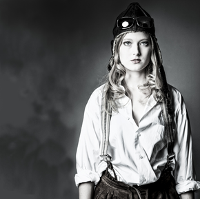
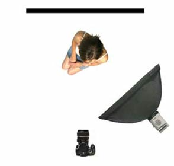

Model fotografie
Modelfotografie kenmerkt zich door de gebruikte belichting en het onderwerp. Het verschil tussen een kiekje en een modelfoto in een studio zijn in de basis meestal 2 zaken. De belichting en het COI (Center Of Interest). Een modelfoto heeft 1 COI, namelijk het model. Afhankelijk van het soort modelfoto (fashion, glamour, beauty) ligt het COI op het model ergens anders. Bij Fashion, zeker bij reclamefolders ligt de nadruk op het model, maar niet op haar gezicht maar op de kleding, om zo de kleding te promoten voor de verkoop.
Een kiekje oftewel snapshot Familiefoto's hebben heel vaak meerdere COI’s en die vaak ook nog met elkaar "ruziën", bijv. 2 mensen te ver uit elkaar voor een groot gebouw. Waar de kijker naar moet kijken is niet duidelijk. Moet hij naar de eerste persoon kijken of naar de tweede of misschien zelfs naar het gebouw...?
De foto 'pakt niet' maar is slechts een registratie van een gebeurtenis of locatie. Kijk, we zijn naar Italië op vakantie geweest, het was daar mooi, want op de foto schijnt de zon ook nog. Ook qua belichting is er veel verschil, zo is bij een goede modelfoto nagedacht over de belichting en nog belangrijker: over de schaduwen. De schadu-wen die het licht creëert geven een foto diepte, geven een karakter en kunnen een bepaalde sfeer neerzetten. Een belichting bestaat vaak uit meer-dere lichtbronnen, dat kunnen lampen of flitsers zijn maar dat kunnen ook reflexiematerialen zijn, die het licht een bepaalde richting op dirigeren.
Welk soort licht kennen we?
Hoofdlicht is bedoeld voor het creëren van schaduw en de illusie van diepte, de schaduw die de neus creëert moet in de meeste gevallen naar onder lopen. De verdere positie van deze lichtbron bepaalt de sfeer van de foto. De positie van het licht wordt ook mede bepaald door het model, sommige belichtingen zijn bij het ene model minder flatteus dan bij het andere. Het invullicht is bedoeld voor het ophelderen van de schaduwen die gecreëerd zijn door het hoofdlicht.
- Weinig oplichting geeft een dramatische look; goed voor oudere mannen, brandweerlieden en andere zware beroepen.
- Veel oplichting geeft een frisse en lichte look, goed voor bruiloft, kinderen, reclame en productfotografie.
- Een lamp recht tegenover het hoofdlicht op een standaard boven het model geeft een mooie rimlicht en hairlicht om een donker model van de achtergrond af te houden.
Basisbelichtingsopstelling
Hoofdlicht op 45 graden van camera, hoofd naar het hoofdlicht toe geeft catchlights in beide ogen. Yasemin Comert Laat het model met haar neus iets richting de flitser draaien waardoor dus de kortste kant van het gezicht wordt belicht. Dit wordt 'short lighting' genoemd. Omdat de neus niet recht naar de fotograaf staat, zie je als fotograaf van de ene helf van het gezicht meer (van neus tot oor, de lange kant) en van de andere helft minder (van neus tot wang, de kortste kant)
Broad light is het verlichten van de lange kant van het gezicht dus de neus van de lamp weg. Brenda Kroon De basisopstelling van de het invullicht is zo dicht mogelijk bij de camera om de meeste schaduwen die de camera ziet in te vullen. Let wel op dat het licht elkaar niet beïnvloed of ongewenst mengt, het invul licht dicht bij de camera zal vaak ook het gedeelte van het gezicht belichten dat ook al door het hoofdlicht belicht wordt. Zo kan dat gedeelte dus te veel licht krijgen waardoor het uitbijt en overbelicht wordt. Om zacht overlopende schaduwen te creëren gebruikt men vaak een accesoire voor de lamp/flitser, een softbox is het populairst op dit moment en zorgt ervoor dat de oppervlakte van de lichtbron groter wordt, waardoor het licht zachter wordt.
Modelfotografie in de studio
Een softbox werkt als een wolkendek voor de zon, het maakt van een harde puntverlichting een groot vlak met egale belichting. Een goede softbox verdeelt het licht gelijkmatig over het hele oppervlak. Met een softbox maak je dus gerichter dan een paraplu een lichtbron groter. Hoe dichter de softbox bij het model staat, hoe zachter het licht is omdat dan de grote van de lichtbron vanaf het model gezien het grootst is. Een softbox dichter bij het model zorgt er ook voor dat er MINDER licht op de achtergrond valt terwijl de lamp toch dichter bij de achtergrond staat, omdat je minder licht nodig hebt om het model te belichten en de verhouding lamp/model tov lamp/achtergrond groter wordt.